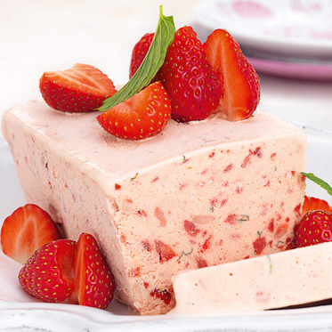

Erdbeer - Parfait
Zutaten für 4 Personen:
250g Erdbeeren, 1 Orange, 125g Zucker, 750ml Sahne, 1 Pck. Sahnesteif, 6cl Orangenlikör
Zubereitung:
Erdbeeren grob würfeln, mit Orangensaft, -schale und 50g Zucker 3 Min. leicht köcheln lassen.
Pürieren, durch ein Sieb streichen, beiseite stellen. Sahne mit Sahnesteif und 75g Zucker steif
schlagen.
Erdbeerpüree und Likör unterheben. In eine mit Klarsichtfolie ausgelegte Kastenform
füllen.
Mindestens 8 Std. gefrieren lassen.
Form kurz in heißes Wasser tauchen, Parfait auf eine Platte stürzen,
in Scheiben schneiden. Mit
halbierten Erdbeeren, Kiwischeiben und Minze garnieren.